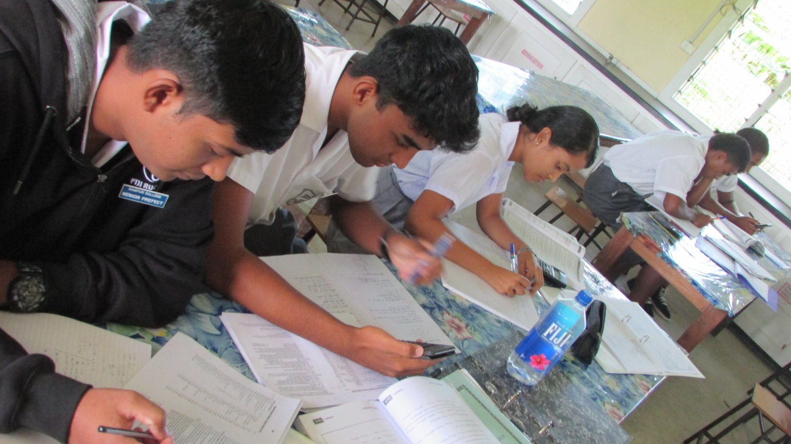
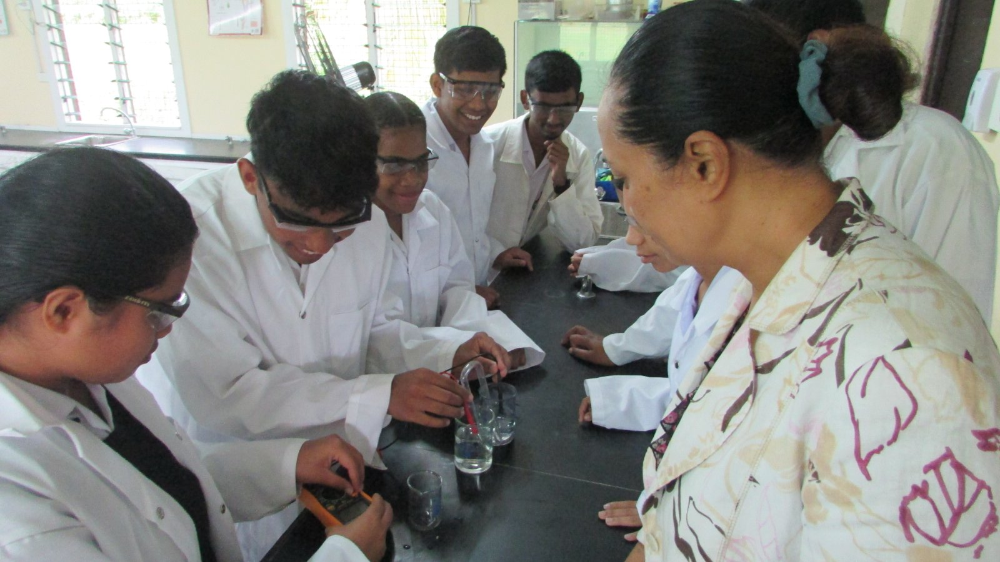
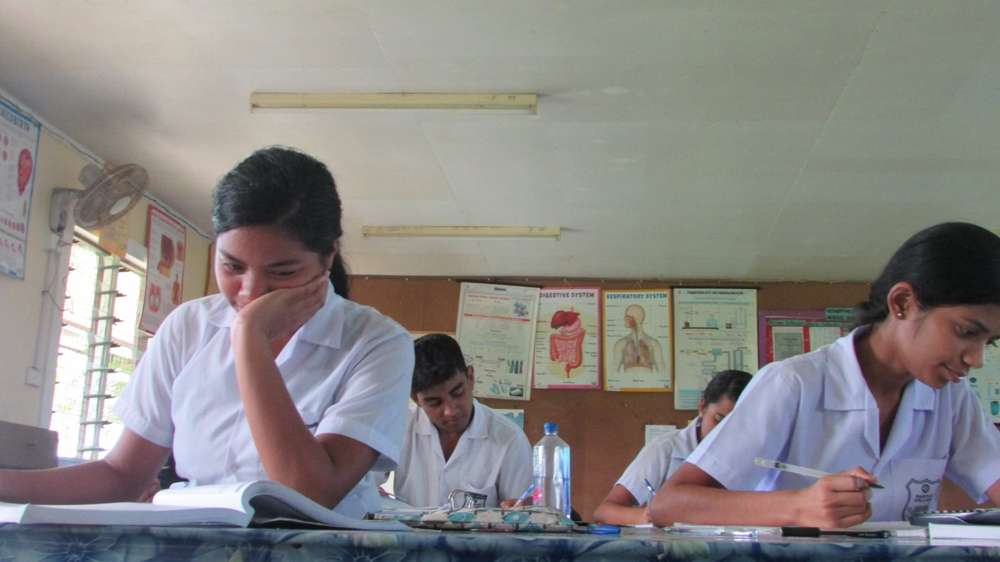

|  |  |  |
Students who study physics are better able to comprehend how the universe functions, including its structure and the interactions between its various parts. To comprehend how complicated scientific ideas affect daily life, students investigate these ideas and draw connections to the real world. Our physics curriculum places a strong emphasis on ensuring that students have a solid understanding of the rules of the physical universe as well as motion, energy, electricity, and magnetism. Students gain knowledge of scientific ideas and procedures as well as the ability to think critically and abstractly, pose questions, develop hypotheses, and conduct experiments. A physics degree requires more than just a casual interest in physics or astronomy because the topic is challenging. You must put forth a lot of effort. We sincerely hope that you will think about joining our department if you are up for the challenge.
Copyright © 2022 By Akash Mishra. All Rights Reserved
COMPUTER PROJECT 2022